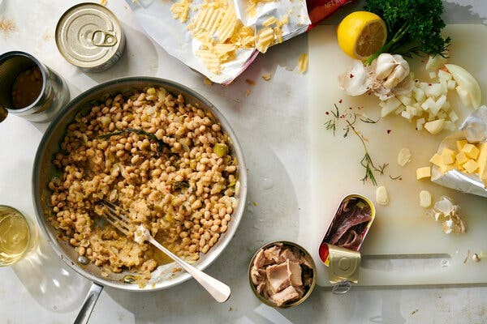

Thusday, Oct 1, 2020
Started as a response to the pandemic, Melissa Clark’s From the Pantry series says goodbye.
Back in March, during those first terrifying weeks of the coronavirus lockdown, I started writing a series of articles as a way to help cooks figure out how to use the mountain of beans and pasta many of us had manically laid in, in case we couldn’t, or didn’t feel comfortable, leaving the house.
Called From the Pantry, it was intended to provide recipes that were versatile enough to cut down on anxiety-ridden trips to the supermarket, while still being satisfying to eat and calming to cook. The recipes, written narratively, were a real-time kitchen diary, based on what I had in my own pantry, and created with an eye toward giving readers wiggle room to use what was in theirs.
Read story here